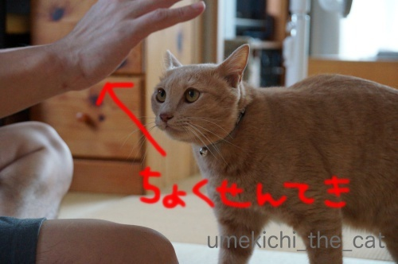
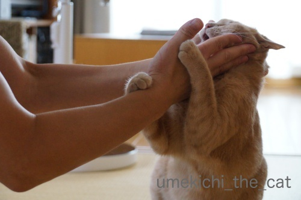
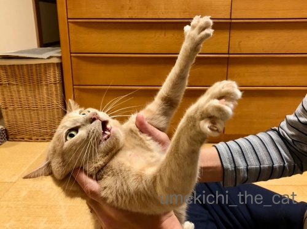
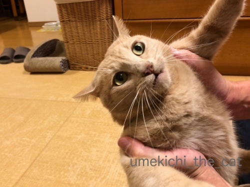
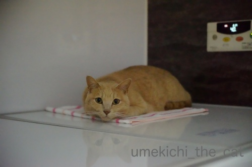
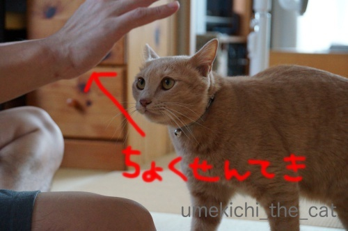
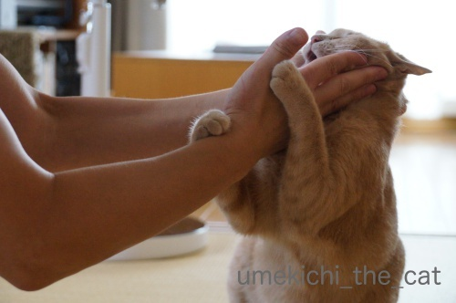
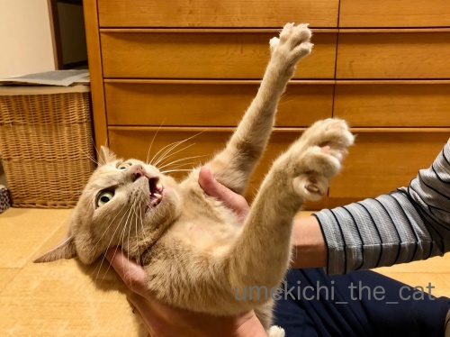
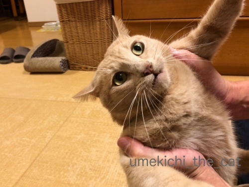
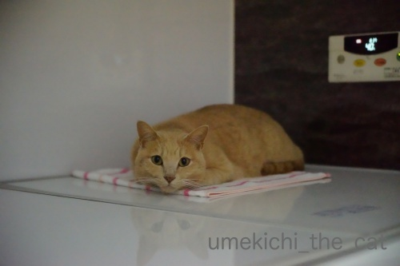

Umekichi Rolling Special [梅吉]
幼い頃から恒例の梅吉とおとーさんのプロレスですが（参照過去記事１、２）

梅吉の攻めは直線的。愚直にまっすぐ攻め続けるタイプ？

直線的な攻めだとすぐにこう反撃されていました。
が、最近ある変化が！！
くるりと回り込む回転技。完成までのながい、ながい軌跡です。
（制作：おっと 28秒 音量注意です）
くるりと回転してからのガブ蹴り・・・攻撃に隙なし。
良くぞあみだしてくれました・・・（涙
この技は名付けて![[ぴかぴか（新しい）]](https://blog.ss-blog.jp/_images_e/150.gif) URS（Umekichi Rolling Special）！！！
URS（Umekichi Rolling Special）！！！
今、ここに、堂々、完成。
この技、踏切が難しい様で足が合わないことがよくあるのですよ。
内側で踏みきるか、外側で踏み切るかみたいな？(*>艸<)
（今週末はフィギュアのグランプリ・ファイナルですね！！）
失敗バージョンもどうぞー。
（11秒です。音無）
失敗すると悔しさ？照れ隠し？おとーさんの足を静かにガブ (^_^;)
100%完璧に成功するまではまだまだ練習が必要な様です。

捕まってしまって

こんなはずじゃなかった、の顔w

プロレスの後は一人でお風呂にこもって反省会してます＾＾
 ↑ガブッと一押し↑
↑ガブッと一押し↑

梅吉の攻めは直線的。愚直にまっすぐ攻め続けるタイプ？

直線的な攻めだとすぐにこう反撃されていました。
が、最近ある変化が！！
くるりと回り込む回転技。完成までのながい、ながい軌跡です。
（制作：おっと 28秒 音量注意です）
くるりと回転してからのガブ蹴り・・・攻撃に隙なし。
良くぞあみだしてくれました・・・（涙
この技は名付けて
今、ここに、堂々、完成。
この技、踏切が難しい様で足が合わないことがよくあるのですよ。
内側で踏みきるか、外側で踏み切るかみたいな？(*>艸<)
（今週末はフィギュアのグランプリ・ファイナルですね！！）
失敗バージョンもどうぞー。
（11秒です。音無）
失敗すると悔しさ？照れ隠し？おとーさんの足を静かにガブ (^_^;)
100%完璧に成功するまではまだまだ練習が必要な様です。

捕まってしまって

こんなはずじゃなかった、の顔w

プロレスの後は一人でお風呂にこもって反省会してます＾＾
2018-12-06 00:00
nice!(81)
コメント(27)

カフェオレ色の梅吉

梅吉 2023年8月10日 永眠


梅吉と出会った譲渡会

犬猫の理由なき殺処分ゼロ
妄想広告
UMEKICHI 光

爆発的に早い！
時々攻撃的！
Thanks to Mr.Boss365
爆発的に早い！
時々攻撃的！
Thanks to Mr.Boss365

こんばんは。
梅吉君のURS（Umekichi Rolling Special）で目が覚めてしまいました（笑）
蹴りも入り完璧です。曲の選択も抜群！！
おっとさんも梅吉君に負けない、良いお仕事されてます！！
捕獲された梅吉君！！マジですね（笑）落ち込んだ姿も可愛い！！
梅吉君！！お風呂場での反省会？失敗・悔しさを洗い流して下さい！？(=^･ｪ･^=)
by Boss365 (2018-12-06 01:02)
この技は初めて見ました。梅吉さんにしかできませんね。
捕まってしまった時のお手手広げて「あーーっ」という顔も良いですね~。
by zombiekong (2018-12-06 02:48)
どんどん新技を開発して
おっとさんに勝っちゃおう＾＾
by ぽちの輔 (2018-12-06 06:51)
梅吉さん、リベンジ！リベンジ！にゃあ。
by ニコニコファイト (2018-12-06 07:13)
おぉ～♪ ローリング！ローリング♪
果敢に攻める梅吉さん！
カッコイーです(#^.^#)
でも捕まったお顔が一番ステキ（笑
by きぃ (2018-12-06 07:57)
ローリングスペシャル完成までの道のりは険しいでしょうか(笑
失敗したときの姿が可愛いですね（＾＾
こんなはずじゃなかったのお顔がツボです～
梅吉さんは表情豊かですね。
by marimo (2018-12-06 09:47)
梅吉さん、ローリングしていますね！
失敗すると照れ隠しですね(^^)
by ma2ma2 (2018-12-06 09:56)
ローリングしまくってすごいじゃん！って思いながら見ていたら
失敗パターンもｗｗ
これ笑っちゃったわ^^
こんなはずじゃなかった・・・まさにそう思っていそうな顔(笑)
それもまたかわいいよ、梅吉君^^
by リュカ (2018-12-06 10:54)
USR、梅吉さんの編み出した攻撃方法格好いいですね。
失敗バージョンも愛嬌があります。
最初に手を出すみ・みぎ、イヤ左から〜って考えているのですね。
飛びついて、キックしながらのローリング複雑なモーションが冴えてます。
『ボールルームへようこそ』Amazonプライムでは宣伝なしで観られます（笑）
by kiki (2018-12-06 13:10)
あはは！
ＵＲＳを「ＵＳＡ」の音で踊ってみよう～っと（笑）
by angie17 (2018-12-06 16:33)
失敗した時が超かわいい～(*^▽^*)
上からローリングしてホールド、猫キック！！
URSは絶対うちの暴れ猫には覚えてほしくないです(≧▽≦)
ウチのは立ち上がって腕にぶら下がる、おさるさんタイプです^^
おとーさん、梅吉さんのホールドが上手ですね。
これは猫父に真似してもらおう♪
by ゆきち (2018-12-06 21:12)
ローリングスペシャル、機敏でカッコいいなー♪
でも、技を極めるには失敗も仕方ないかも知れません。
それにしても、失敗して捕まってしまった時の
梅吉さんのおひげが全開ですねっ。^^;
by yes_hama (2018-12-06 21:20)
タックル〜〜からの、でんぐり返しですね^^
UDS（UME DENGURIGAESHI SPECIAL）ってのは？（笑）
捕まったときの「あ〜れ〜」って顔がナイスです（*´∀｀*）
なにげに・・・おとーさま、腕ムキっと筋肉？
by Ja-Kou66 (2018-12-07 00:00)
動画、最高ーっ(≧∀≦)
BGMもばっちり決まってます！！
by よーちゃん (2018-12-07 08:41)
小さな体でおとーさんに立ち向かう梅吉くんの真剣なまなざし。
そしてついに編み出したURS！！
リングサイドのちぃさんの目にはうっすら涙が・・・。
私もいつも通りもらい泣きしてますよ(≧▽≦)
猫に限らず生き物って、失敗したときに何となくばつの悪そうな雰囲気を漂わせますよね。
照れ隠しに八つ当たり。家の子たちもみ～んなやります(*^-^*)
by emi (2018-12-07 14:39)
私も梅吉君とプロレスごっこしてみたいな（ﾟ□ﾟ）
by 英ちゃん (2018-12-07 19:09)
おとこ同士の真剣勝負！梅吉さんの
立派な筋肉と俊敏性はこのように
日々遊びながら鍛えられているの
ですね～。動画監督：おっと様の
高度な技術にもビックリ(*ﾟ∀ﾟ*)！
いろんなことができるんですね～。
by うりくま (2018-12-07 23:57)
梅吉さんのローリング技、すごいい～！
まさにスペシャル♪おっとさんとの鍛錬の賜物ですね＾＾
タイミングが合わないときもあったんですねー＾＾；
こんなはずじゃなかった、っていうお顔もキュート＾o＾
by sana (2018-12-08 14:48)
Boss365さん＞
コメントいただいたお時間見て恐縮しましたw
梅吉（とおっとの）の気合が画面から溢れて目がどパチーッ！
でしたか(*>艸<)
先週末、おっとがなにやら難しい顔をしてPCに向かっていると思ったら
URS動画の編集をしていましたよw
最後は私のダメ出しがはいったりして( ´艸｀)
プロレス後の反省会はおっとの入浴中の事もあるんですよ＾＾
おとこ同士の会話、気になりますwww
zombiekongさん＞
なぜ「回転しよう！」と思ったのか是非聞いてみたいのですが
仮に梅吉が話せたとしてもまともな答えは期待できそうもありませんwww
捕まって「あーーっ」の顔すごいでしょ(*>艸<)
この状態でおっとの顔をかぶっとしようとしている時は
もっとすごい顔しててそれがとっても可愛いのですよー0(≧▽≦)0
ぽちの輔さん＞
時々この技に「ジャンピング」が付く時があります！
それが完成したらおっとに勝てるかも！？
ニコニコファイトさん＞
かならず りべんじ するにゃあ(ΦωΦ) byうめきち
きぃさん＞
時々ですがローリングが連続して決まる時もあるのですよ＾＾
とても華麗で思わず目頭が熱く・・・w
私もこの捕まった顔が梅吉らしくて大好きです！！
marimoさん＞
100%の成功率にはまだまだ険しい道程の様ですw
日々のたゆまぬ努力が必要、と二人は（笑）練習に励んでいますよ( ´艸｀)
猫は表情筋が少ないので無表情、なんて言っている人もいますが
猫って表情豊かですよね＾＾
梅吉もいろんな表情をして楽しませてくれますが一番得意なのは
「これじゃない」顔ですwwwww
https://umekichi-the-cat.blog.so-net.ne.jp/2018-07-29
よろしければご覧ください＾＾
ma2ma2さん＞
親バカながらなかなか良いローリング具合だと思っておりますw
失敗後はどう見ても照れ隠しですよねー0(≧▽≦)0
リュカさん＞
ローリング失敗、笑えるでしょ( ´艸｀)
この時はおっとの足をがぶしてましたが
自分でもどうして良いかわからずにもぞもぞしている時もありますw
こんなはずじゃなかった・・と思いながらもちゃんと
おっとの顔にねこぱんちを繰り出そうとしていましたよー(≧▽≦)
その顔が必死すぎてまたかわいいんだわ＾＾
kikiさん＞
なぜ「回転しよう！」と思ったのか・・・
もしかしたら「次のプロレスで試してみよう」
なんて考えていたのかと想像すると可笑しくてw
梅吉なりに色々考えて生活しているんだなってwww
URSの一連の動作、キマるとなかなか華麗なんですよ！
angie17さん＞
それはとっても楽しそうです！私も梅吉と一緒に踊ってみよう♪
ゆきちさん＞
こてつくんのローリングも見たい気もしますが
すっぽんぶりを発揮されると流血の惨事になりそうですものねw
立ち上がって腕にぶら下がる系、
梅吉とおっとは今その技を練習中なのですが
梅吉は寝技の方が得意な様でなかなか上手くいきません (⌒_⌒;
ホールド、上手くできると「あにすんじゃー！」と
抵抗するすごい顔が間近で楽しめると言う事です(*>艸<)
yes_hamaさん＞
ローリングの前にジャンピングが付く時があるのですが
決まった時は親バカ二人から（笑）歓声があがります＾＾
これからも次につながる良い失敗を重ねつつ
成長していって欲しいですw
おひげ、本当にこれ以上ないくらいピンピンの全開ですね(*>艸<)
Ja-Kou66さん＞
あはは0(≧▽≦)0森光子さんもびっくりの（古い）
でんぐり返しですね！
URSにUDS、技を仕掛けた位置の高さで区別しようかしら(*>艸<)
おっとの腕、ほんとうだ！写真ではムキっとして見えますね。
これは全くもって偶然。ごくごく普通のおっちゃんの体系でございますw
よーちゃん＞
おっと、休みの日にしんけんにPCに向かっていると思ったら
この動画を作ってくれていましたw
お誉めいただいて本人も喜んでおります(´▽｀)
emiさん＞
梅吉がこの技を一生懸命考えて生み出したんだと思うと
感動もひとしおですw
この冬、一番の感動をあなたへ・・・
ってコピーつけると良かったかしら(´▽｀)
照れ隠しに八つ当たり、分かりやすすぎて笑っちゃいますよね！
タラくんが一番面白いのしてくれそう！！
英ちゃんさん＞
対戦相手、いつでも募集中です！
手に赤い線がたくさん付くので
電車のつり革につかまると周りがギョッとする特典付きです＾＾
うりくまさん＞
最近の梅吉はじゃらしでまったり遊ぶよりも
激しく（笑）追いかけっこをしたり
プロレスして遊ぶのが好きになってしまいましたw
運動不足の心配がないので良いのですが
付き合う飼い主も結構大変です。
・・・と言いながら喜んで写真や動画を撮ってますが( ´艸｀)
休日に真剣にPCに向かっているなと思ったらこんな動画を！
しかもなかなかの凝りよう(｣ﾟﾛﾟ)｣
我が子可愛さゆえ、でしょうか。。。
by ちぃ (2018-12-08 14:49)
sanaさん＞
いつも「そんな単調な攻めじゃおとーさんに勝てないよ！」と
いっていたらこんな技が・・・
やっぱりねこは人間の言葉がわかっているのかなってwww
失敗するととっても気まずそうにもぞもぞやってて
それがまた面白いです( ´艸｀)
こんなはずじゃなかった顔は梅吉らしい良い表情だ！
と我が家でも評判ですよ＾＾
by ちぃ (2018-12-08 14:53)
ファイターのお顔としょぼん顔の落差が
なんともいえず。
すてきというか。
曲もぴったりでどこぞの試合に向けて
練習しているのか？と思ってしまったり^m^
by ふにゃいの (2018-12-08 22:48)
オトコ同士の一騎討ち！
梅吉さん、真剣な眼差しに
力がみなぎっているのが、伝わってきます( ´∀｀ )
あかりも、ローリング技からの抱え込み蹴り技に
持っていくのが、得意技なんですヨ～(≧▽≦)
特に、夫に対しては、戦闘モードです( ´艸｀)
by マーヤ (2018-12-09 00:37)
おはようございます。
お気遣いある・優しさあるコメントありがとうです。
客観的に見れるようになったら？レベルアップして復活したいです。
当分の間、ブログ訪問者？で楽しむ感じです。
色々、ありがとうございました！？(=^･ｪ･^=)
PS. コメント入れたい時間は、たまたま？です。
ニャンズとの思い出・記録に動画良いです。すももの検討課題です！？(=^･ｪ･^=)
by Boss365 (2018-12-09 11:18)
ふにゃいのさん＞
梅吉の顔つきって落差ありすぎですよね(*>艸<)
時々「同じ猫さんですかー？」って聞いてますw
ウワサによると全国大会があるのだとか・・・（なんのだ？）
梅吉にいつやるのって？聞いても答えてくれません(≧▽≦)
マーヤさん＞
なんと！あかりちゃんがローリング！？
あかり・ローリング・スペシャル・・・見てみたい0(≧▽≦)0
梅吉はおっとと戦闘モードの時鼻息がすごいです。
少し離れた場所にいても「ふーーーーんっ！」って
聞こえてくるんですよ(*>艸<)
Boss365さん＞
レベル・アップでの復活楽しみにしております＾＾
コメントいただけるのは楽しみにしておりますがまずは休養！
無理のない範囲でお願いしますね(^_－)☆
最近梅吉の動画を積極的にアップしているのはまさに「記録」です。
どこかに動画が残っていれば梅吉がこの世を去って
やがて私たちも無くなって・・・
それでも梅吉のことを見てくれる人がいるかも、と思って残しています＾＾
すももちゃんの動画もぜひぜひ！！
by ちぃ (2018-12-09 15:30)
あれ？コメントが消えてる？
梅吉さん、全身を使っての複雑でお父さんが避けきれない
攻撃をものにしたんですねぇ( ^ω^ )
踏切を失敗した時、お父さんの手に後ろ足乗っけたまま
ちょっと固まってる姿が可愛いすぎます=(^.^)=
反省会、ちゃんとタオルを敷いてもらってるところに
お母さんの愛を感じますねぇ♪( ´▽｀)
by ニッキー (2018-12-09 21:12)
こんなはずじゃなかった、の顔ったら！（笑笑）
by yuppie (2018-12-09 21:52)
ニッキーさん＞
あらら・・・何かしら・・・
いずれにしても再度のコメントありがとうございますm(_ _)m
失敗した時はおっとの手に足を乗せる、腕にお腹を預けると
いろんなパターンがあるのですが
そのどれもが「わし こうするつもりやってん」と全身が言ってますwww
蓋の上のタオルは梅吉用お風呂タオル＾＾
せっかく敷いてるのにこの上に乗ってないことも多いです(*>艸<)
yuppieさん＞
梅吉は本当に気持ちが顔にでる子ですw
そこがわかりやすくて（わからないことも一杯ですが）
可愛いところなんですー＾＾
by ちぃ (2018-12-10 09:16)